scripts/generate_assets_25d.py · 17 files · 256×48 / 32×48 / 32×32 / 14×5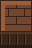
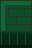
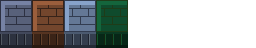
Top face has bevel hilight + brick mortar; south face is 48% darkened with vertical block seams + bottom-edge shadow strip. Godot: draw top Sprite2D at y, side Sprite2D at y+16 (no collider height), or single 32×48 sprite bottom-anchored. z_index = foot_y(=y+16).
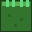
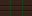
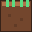
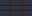
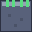
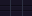
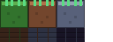
Dark ellipse 75–90 alpha. Attach as child Sprite2D at Vector2(0,12). ShadowSystem25D scales with height: scale = clamp(height_factor,0.4,1.0).
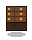
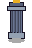
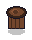
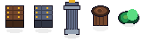
# 1. World YSort (one line in World root, or use WorldBuilder25D.build_25d_world): y_sort_enabled = true # Node2D property, or wrap entities in a YSort node # In world_builder_25d.gd: _enable_ysort(parent) sets it automatically. # 2. Wall with height — use 2 sprites (cheap, colliders stay 32×32): # Sprite2D top at y (z = y + 16) # Sprite2D side at y + 16 (z = y + 16) ← darkened south face # StaticBody2D/CollisionShape2D at y (Rectangle 32×32) # 3. Drop shadow on any mover: ShadowSystem25D.attach_shadow(player) # -> child Sprite2D at (0,12) ShadowSystem25D.attach_shadow(enemy) # Updates scale automatically with jump height. # 4. Depth ordering fallback (when not inside YSort): Depth25D.update_sprite_sort(player) # z_index = int(y + 12) Depth25D.update_sprite_sort(wall) # z_index = int(y + 16) # 5. Camera fake perspective: # Replace Camera2D script with scripts/camera_25d.gd (tracks player, offset y*0.06) # 6. Shaders (optional): # World ground -> shaders/height_fog.gdshader (fog = y / MAP_H) # Characters -> shaders/sprite_depth.gdshader (height uniform + outline)
All files live in assets/tiles/25d/, assets/sprites/prop_*_25d.png, assets/sprites/shadow_*.png, scripts/*25d.gd, shaders/*.gdshader. Original 256×256 tilesets + 128×128 spritesheets untouched — 2.5D assets are additive.